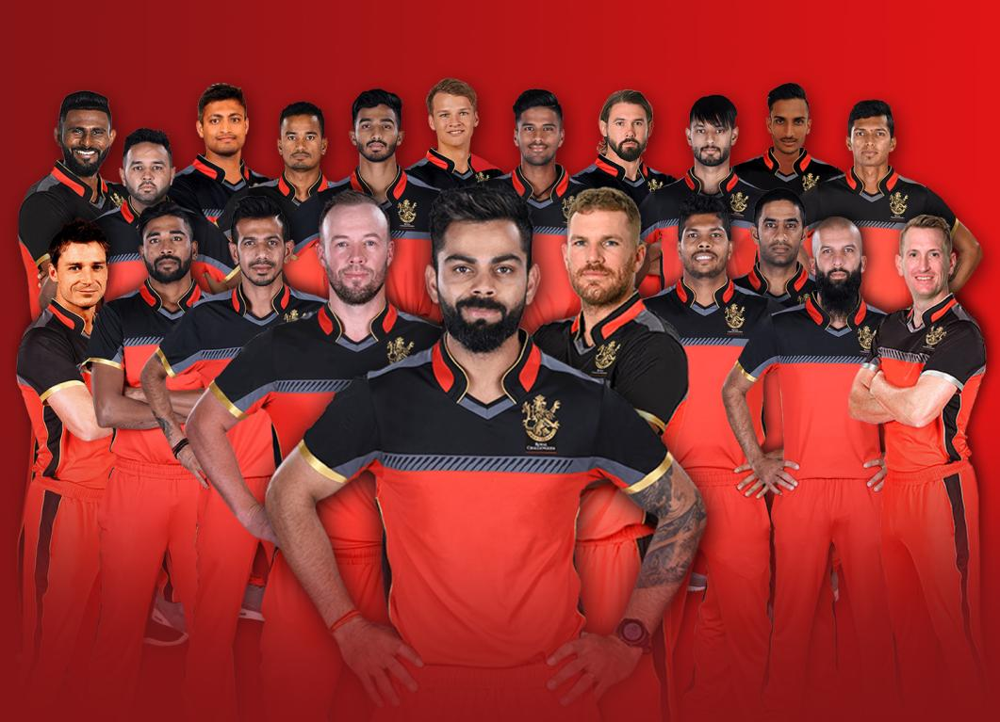

Royal Challengers Bengaluru(RCB)

Royal Challengers Bengaluru (RCB), a professional cricket team in the Indian
Premier League (IPL), is based in Bengaluru, Karnataka. Founded in 2008, RCB is
owned by United Spirits. The team has finished as runners-up three times (2009,
2011,2016) and has qualified for the playoffs nine times.
Players:
- Rajat Patidar
- Virat Kohli
- Phil Salt
- Jitesh Sharma
- Devdutt Padikkal
- Swastik Chhikara
- Liam Livingstone
- Tim David
- Manoj Bhandage
- Jacob Bethell
- Krunal Pandya
Achievements:
Here's a more detailed look at their achievements:
- Runners-Up: RCB finished as IPL runners-up in 2009, 2011, and 2016.
- Highest Team Total: Scored 263/5 against Pune Warriors India in 2013.
- Highest Individual Score: Chris Gayle's 175* off 66 balls in 2013.